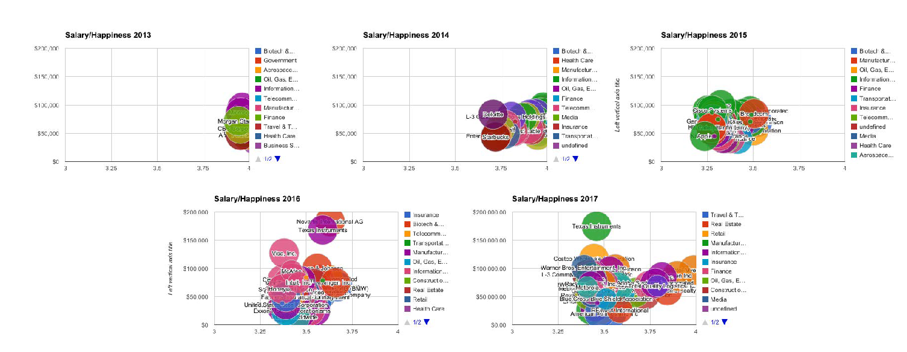
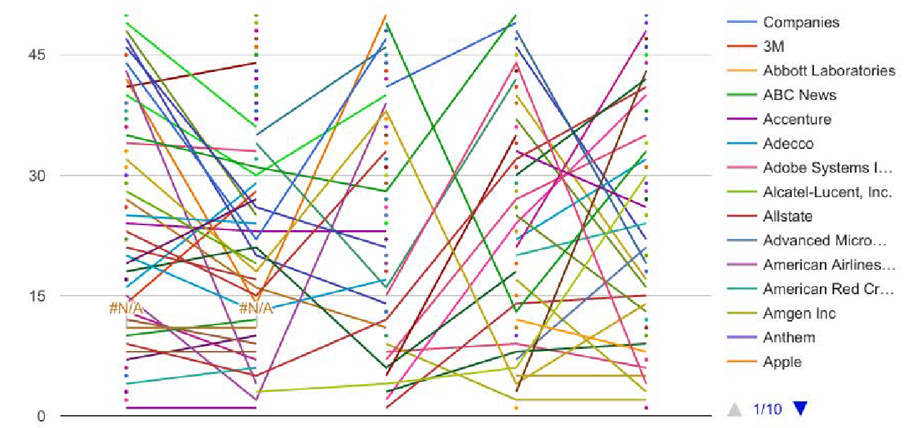
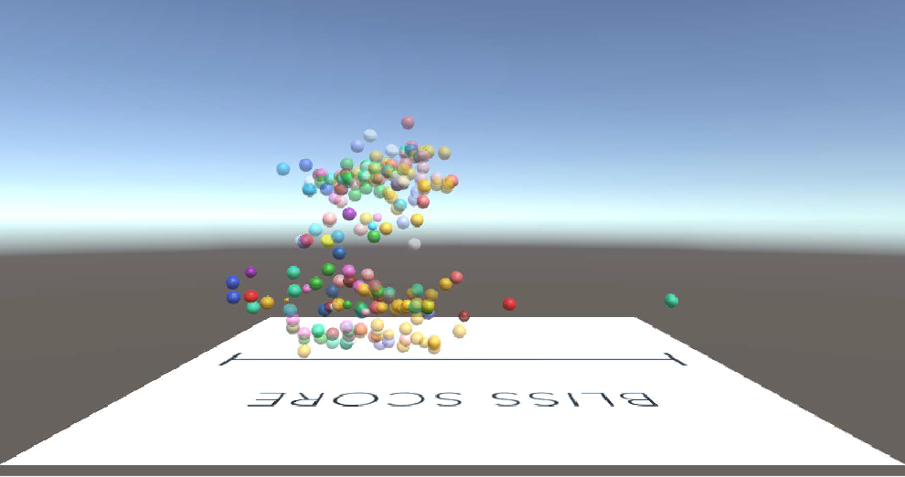
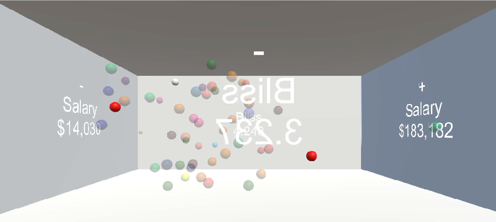
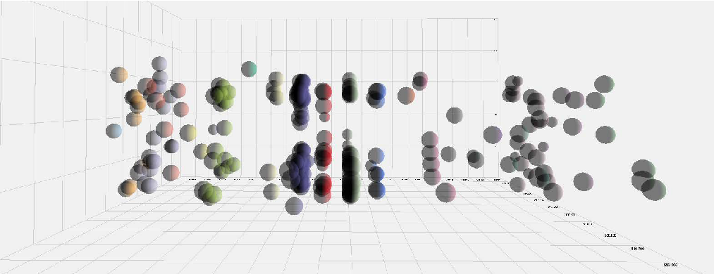
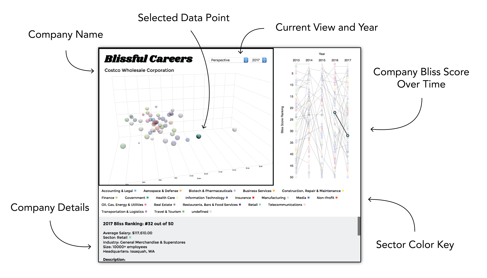

This is a data visualization / exploration tool to enable the discovery of different factors contributing to companies "Bliss Scores." This was created as an individual final project for a Data Visualization course at CMU.
| Year: | 2017 |
| Client: | CMU |
| Duration: | 2 Months |
| Demo |
Before this project, I been spending a lot of time trying to figure out where I want to work after finishing school. With so many variables, I found it hard to assess the value and reliability of rankings.
I decided to explore the CareerBliss 50 Happiest Companies over the last 5 years to see if I could suss out any insights.
After gathering the data in Excel, I made some initial basic graphs and charts to see if I could find and significant trends or other areas of interest.
Of the charts I explored, the bubble charts of the Happiness in relation to Salary and the Line graphs of the rankings over time were the most interesting, but due to the amount of data, they were very hard to read.


From this exploration I settled on a new goal: use 3D to make exploring bubble and line graphs together easier in the context of happiness rankings.
Visualization Tool: Unity3D
Initially I wanted to create a physical space where users could walk around and explore the data using Unity and the HTC Vive, but I ran into two major issues:
1) Even though the HTC Vive is a high end VR system, there is still a lot of aliasing on text, making it hard to read large amounts of data
2) I ran out of real estate quickly. In trying to make the text readable and positioned in logical places for the user to read it, I ran out of places to put information.


Visualization Tools: D3 + Three.js
First, I explored different attributes for the z-axis, the biggest power up of doing the visualization in 3D. What I found is that most of the data that had 2 axes of similarity also had a third, making the increase in readability low.

So instead I used three.js to show a bubble chart of salary and bliss rating with a randomized z-axis for increased readability. I then used D3 to show a line graph of the company’s rank over time in 2D.
View working demo here
By clicking on bubbles in either graph, the bubble and the corresponding bubble in the other graph will highlight. Selecting the year in the dropdown on the bubble chart will change the year view, selecting a bubble in a different year column on the line graph will also change the year view. Selecting a different option from the view dropdown will change the perspective. Any company selection will change the corresponding data at the bottom of the page.

If I were to continue the project, I would like to make the visualization responsive on resize, add filters to scope down the data, and add important news stories that may inform the rankings.